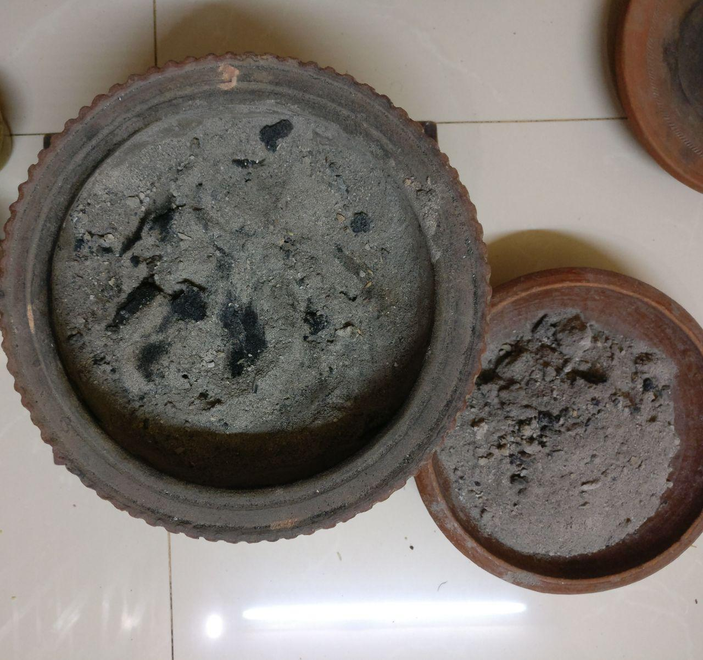
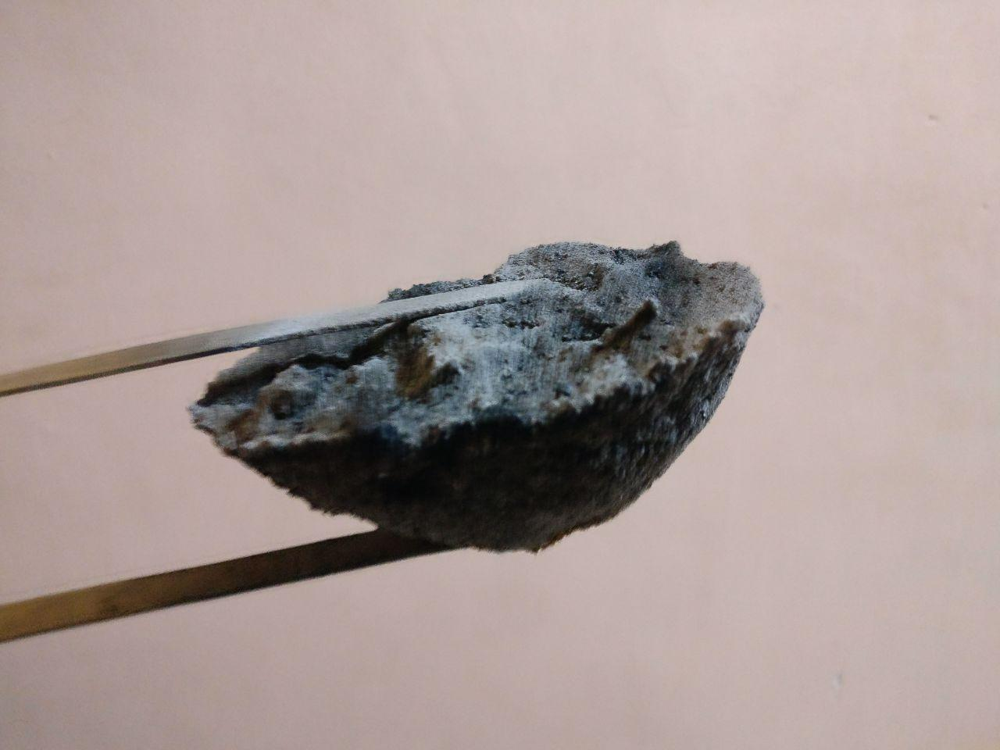
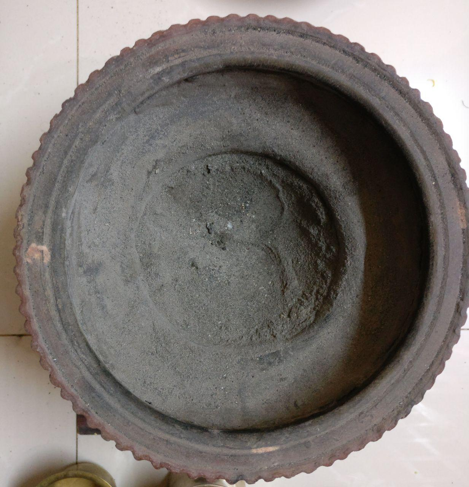
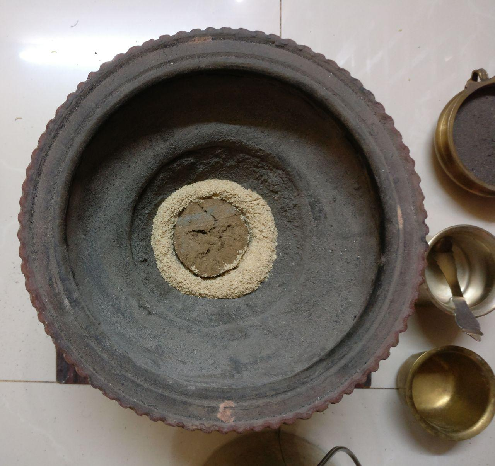
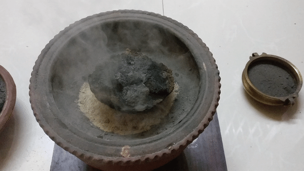
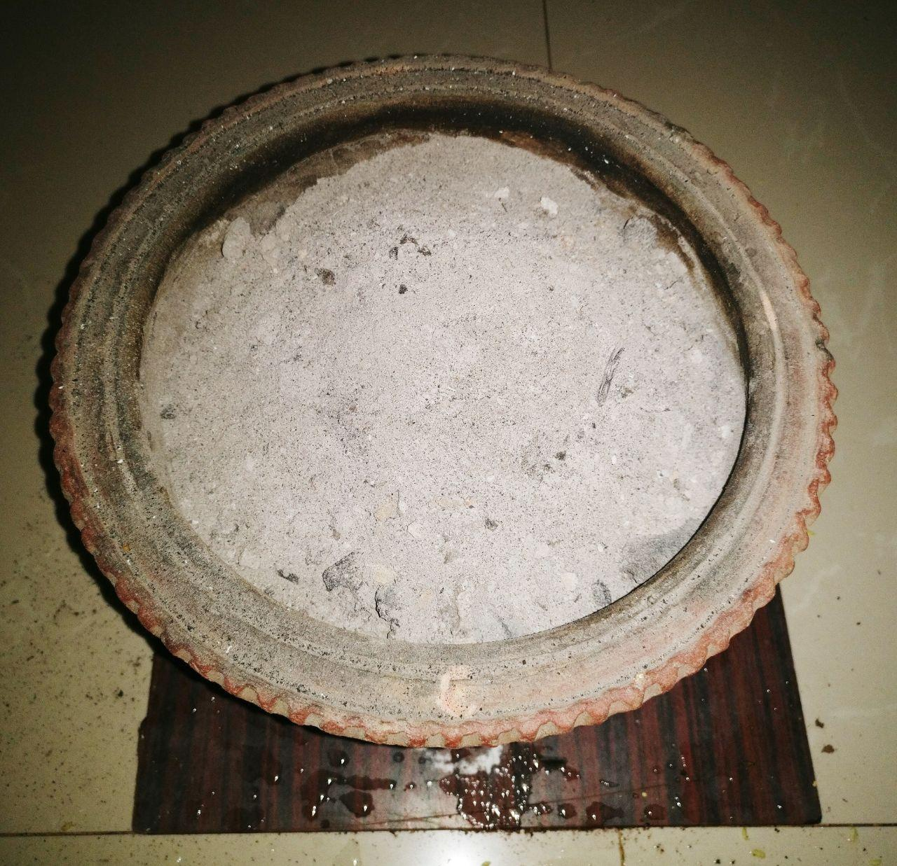

प्रदर्शनानि
चित्राणि
     
{kind=link}
{kind=link}
{kind=link}
{kind=link}
{kind=link}
{kind=link}
अग्नेः पुनर्ज्वालनम्
- अङ्गारान् निष्कास्य पात्रान्तरे स्थाप्यित्वा
- भस्म निष्कास्य द्रोण्याः
- गोमयखण्डं / गोमयेष्टिकां वा स्थापयित्वा (“My muttan is flat, as I found this consumes lesser bran to cover it.”)
- बुषम् पूरयित्वा
- “Pack the bran densely by pressing with the brass ladle.. the denser you pack, the longer the rakshanam. … I use about 150 gms of bran and a small muttan, per kala. 10kg bran lasts for over a month.”
- अग्नि-रक्षण-स्थान एव होमे क्रियमाणे
- तदुपरि पात्रान्तरे पूर्वं स्थापितान् अङ्गारान् प्रतिष्ठाप्य
- तदुपरि गोमखण्डानि समिच्च स्थापयित्वा
- धमन्या ऽऽग्निं पुनर् ज्वालयित्वा,
- होमे ऽनुवर्तनम्। धमनीप्रयोगो यथापेक्षः।
- कुण्डान्तरे होमे क्रियमाणे
- होमे ऽनुवर्तनम्। धमनीप्रयोगो यथापेक्षः।
- अन्ते ऽङ्गाराणां रक्षणकुण्डे प्रतिष्ठापनम्
- ततः भस्मारोपणम्। “After completing the aupasanam, I cover the entire agni with the bhasma kept aside. This regulates the airflow, as well as keeps the bran hot for many hours enabling it to fuse well (and form a “bun”).”
द्रव्यम्
- द्रव्यनामान्य् अत्र ।
- बहूनाम् - (गोमयखण्डम् → गोधुमतुषाः) इति क्रमः।
- किञ्च वेङ्कटेशार्यः - “I tried initially with rice bran. It did not work for me…”
- स एव - “Umi (paddy husk) burns too fast and gives out lot of smoke. Also one needs huge quantities. Not suitable for cities.”
- बॆङ्गळूरुनगरे चन्द्रः - Gou Jwala Bricks (made out of Cow dung + Paddy husk) + Wheat/ ravA bran
आकराः
- सुवर्णकारैः प्रयुज्यमाना मृद्द्रोणी प्रशस्यते। साधारणमृद्द्रोणयः शीघ्रमेव (६ मासेषु) नश्यन्ति। “I use a pot which is fired at high temperature, used by gold smiths. It will lay a long time, many years unlike the flower pot, and is much lighter.”
- Bran: “If you want to buy in bulk, you will get in New Tharagupet near city Market. They sell by bag of 45 kg. If you want to buy smaller quantities, check out in cattle feed shops near your place”
- “Gou Jwala Bricks: They are available from Sri Ramachandrapur Matha Giri Nagar. If you are willing to pay auto charge (about 300 to maybe 400 depending on the distance) they deliver it to home. 2 pieces per day required. … Gomaya Kanda / Vratti made for commercial purposes tend to have mud + plastic cover pieces etc. (How does one find mud mixed in this ? Two ways #1. It smokes a lot more #2. Crush the ashes post Homa with hand… You can feel the fine grains of sand that will remain.) Bricks from Sri Ramachandrapur Matha is extremely good. It’s also from native cow breeds. "
- Dung pieces: “We have indian native cows in the next farm. One bucket of cow dung will make about 200 muttan, enough for 3 months. But you will get the same outcome if you use thick cow dung cake (virattis) or the ones Chander uses from R’pura mutt.”